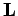
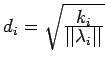
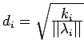
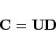

Inhalt Index DeskTop Bronstein

 Lineare Algebra Eigenwertaufgaben bei Matrizen Spezielles Eigenwertproblem Hauptachsentransformation quadratischer Formen
Lineare Algebra Eigenwertaufgaben bei Matrizen Spezielles Eigenwertproblem Hauptachsentransformation quadratischer Formen


Die praktische Durchführung der Transformation (4.135) erfolgt über die Hauptachsentransformation (4.129). Anschaulich bedeutet dieses Vorgehen, daß zunächst das Koordinatensystem einer Drehung mit der Orthogonalmatrix der Eigenvektoren von  unterworfen wird, so daß die Form
unterworfen wird, so daß die Form
entsteht, in der  die Diagonalmatrix von  ist. Daran schließt sich eine Dehnung mit der Diagonalmatrix
ist. Daran schließt sich eine Dehnung mit der Diagonalmatrix  an, deren Diagonalelemente  lauten. Die Gesamtransformation wird dann durch
an, deren Diagonalelemente  lauten. Die Gesamtransformation wird dann durch
|  | (4.137) |
beschrieben, und man erhält:
Hinweis: Die Hauptachsentransformation spielt eine wesentliche Rolle bei der Klassifizierung von Kurven 2. Ordnung und Flächen 2. Ordnung.